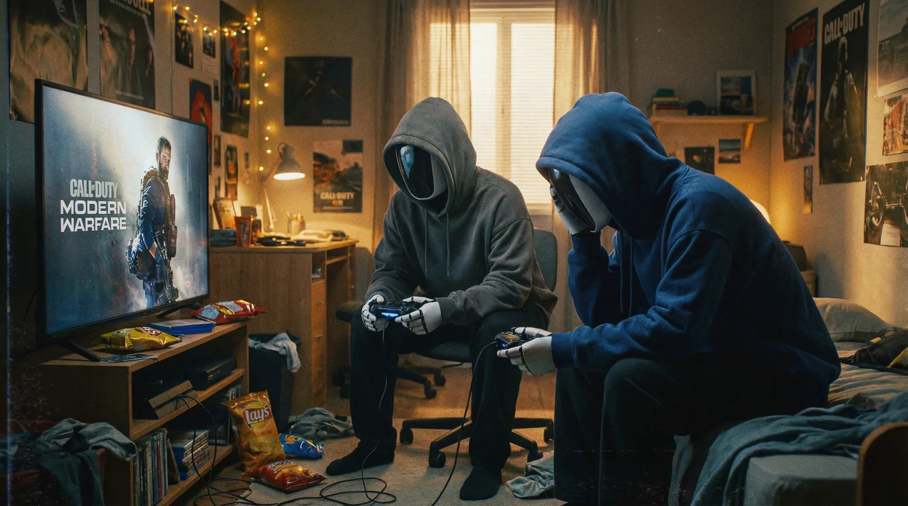
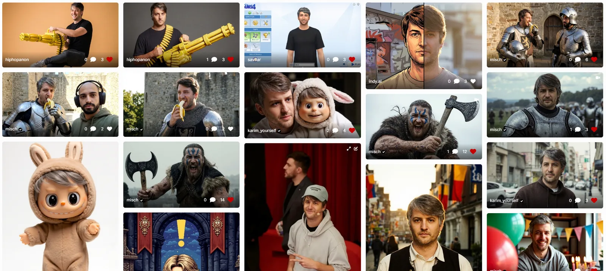

For most of human history, parasocial relationships have relied on the media we consume and the stories we're told.
We fall in love with movie stars, fantasise about musicians, and have a crush on people who don't know we even exist. We idolise legendary warriors, pray to gods that we made up, rage about politicians we've never met and watch movies with actors that are long dead.
The media we consume and the people in it shape what we think and ultimately what we create. Without inspiration and the kiss of a muse, no meaningful art can happen.
For generations, this cycle remained unchanged. We could dream about someone or something, but we couldn't make them appear.
Today we can.
With recent progress in generative AI, that magical barrier has collapsed. Thanks to our new tools, anyone can now materialise any dream or fantasy.
When Google released their breakthrough Nano Banana Pro Model on November 20th 2025, AI characters and avatars became realistic enough that when people see them, they react viscerally with attraction, outrage, defence and disgust. The same emotions we'd have toward real people.
I find digital characters and the discussions they spark fascinating. Over the past weeks, I thought hard about them and joined the discussions online. To my surprise, the related content reached millions of people.
Some of the questions I've asked myself as a consequence are:
Why do we prefer to generate other people rather than images of ourselves?
Why does AI content feel so real even when we know it's not?
Why do men primarily create women, and women create men?
Why are AI characters controversial?
And what even is identity in today's world?
The following are some of the answers I found.
Adolescent Romantic Parasocial Attachment
When I was around 14, I had a big crush on 'The O.C.' actress Willa Holland.
I had recorded her "Kaitlin Cooper comes home" scene off my television with my early Nokia smartphone and watched it so many times that I still know the entire dialogue by heart today.
Willa was pretty much my age, and when this 'love at first sight' feeling hit me as an adolescent, my brain was still under construction. From a scientific perspective, during puberty, the limbic system grows more active and more sensitive to emotional reward signals. These areas light up when we feel attraction, admiration, or longing. At the same time, the prefrontal cortex, which handles reasoning, long-term planning, and emotional regulation, is still years away from full development. So the circuits that generate intense feelings come online well before the circuits that can contextualise them.
When both systems in the body mature at different speeds, it creates a mismatch in the rational-emotional balance.
The above is the reason why love feels so intense when we're young. It's also the reason why I thought I was in love with pixels on a screen.
Psychologists call this "Adolescent Romantic Parasocial Attachment" (ARPA): a one-way emotional attachment that feels romantic, even though any relationship to the potential partner is entirely imagined.
Today, 20 years later, I have long understood that these feelings were irrational; yet these early screen experiences have shaped my life in significant ways. Due to my crush on Willa (and a few more celebrities during those years), I started making my own desktop wallpapers in Photoshop, which in turn taught me early skills to design MSN profile pictures for friends; it made me dig day and night through tumblr, to experiment with WACOM tablets and learn how to draw in Photoshop, and finally, to putting out a ton of websites before I turned 18.
What followed was a career in digital media that I'm living fully to this day.
My crush on Willa has long faded (Sorry Willa), but my interest in media and the things it can do to our bodies has not.
The films I saw, the games I played and the music I listened to have ultimately defined which fantasies I have and what I want to create.
What we do when no one's watching
When generative AI came along in 2022, an entirely new medium entered the picture. This medium is sometimes referred to as "dream machine", because of its unique capability to turn any fantasy into audiovisual media.
Generative AI has now been around for a couple of years, and we finally have early data on what people actually create with it and where our overall interests seem to lie.
And yes, it's exactly where you think it is.
The overwhelming majority of non-professional use cases of generative AI are of intimate nature: People use generative AI primarily to make their erotic fantasies come alive.
However, we see a difference between men and women, and notice one detail that stands out.
Most of the generated images on uncensored AI image platforms feature women, most often in eroticised poses. Most of these get created by men. However, on the opposite gender, women are less driven by visual stimulation and more by emotional narratives, thus creating and consuming more in the form of text or audio! That's why applications focusing on AI relationships and companionship target female audiences heavily, and why a lot of paying users in that category are women.
An inherent property of this medium is that the generation of such intimate content happens without consent from the target, both for men and for women. It is parasocial and can best be compared to "Fan Art".
Because of that, some platforms block certain fantasies. What is considered harmful, biased and censored in AI varies by culture.
In the West, AI Models are often censored on nudity, but not on political content, whereas in China, it tends to be the opposite. Furthermore, in China, AI companions have a markedly different user demographic: adult women (See: Why American Builds AI Girlfriends and China Makes Ai Boyfriends" - ChinaTalk).
Overall, nearly 1 in 3 young adult men (31%) and 1 in 4 young adult women (23%) have chatted with an AI boyfriend or girlfriend (according to the Institute for Family Studies), showing widespread engagement across genders.
When Google's new Image Model 'Nano Banana Pro' was released, I was fascinated by its capabilities to accurately depict any B-celebrity (and upwards). I was also slightly confused about Google's rather nonchalant approach, which clearly had a very open perspective on image rights. Almost anything seemed possible now, and thanks to their new "Google Grounding" the model is even capable to pull information in real time.
To find out more, I did a bunch of benchmarks on its new capabilities. One that I found particularly fascinating was how Nano Banana was able to accurately render top model Winnie Harlow's vitiligo condition, a skin condition where patches of skin lose their pigment (melanin), resulting in white or lighter-colored areas on the body. Nano Banana Pro could generate her almost perfectly every time. The times when AI characters had 6 fingers were clearly over. This was an incredible breakthrough.
Another new use case I discovered and that received traction online was the "Moodboard-to-Image" prompt I shared on X. Using this method, I created an AI Influencer from scratch.
That influencer went viral.
It was an image of a woman, taking a selfie in her room, wearing an Iron Maiden T-shirt.
Tried an AI influencer with nano banana today.
Thread 🧵👇


Over that content, I received death threats and have been called all kinds of slurs, one more absurd than the other. 'We're not ready for this', 'This will change everything', 'We're so cooked', were some of the more neutral comments.
When Twitch Streamer Asmongold pulled up my post on his channel, I knew the interest was higher than usual.
He described her as "Robo Hoe". "I can say that because they're not real people. You can do anything to them" was the justification that followed.
The data we have on AI-generated content and companion app usage proves that he was not wrong: Men sexualize. Women emotionalize. Mostly.
Or in Asmongold's words:
Men want Robo Hoes. Women want Robo Bros.

Imagination Becomes Material
Man's dream of creating a golem, a body without a soul, is older than the bible. According to the Babylonian Talmud, written between 200-500 CE, Adam spent his first twelve hours of existence as a golem before god gifted him life. A similar story, that of the Greek sculptor Pygmalion, who tried to create the woman of his dreams, is almost equally old.
So clearly, the idea of creating a non-human companion is not new.
She lives on a server in Iowa


The reason why society becomes aware of this idea whenever a new, more powerful AI tool comes along is that generative AI, at its core, enables people to put their imagination into form. This has led to a content explosion and to the emergence of entirely new forms of media that many people seem unprepared for, including AI Characters.
With AI tools, for the first time in history, the private inner world can be rendered externally in high fidelity. Desire, fantasy, projection, resentment, longing, idealisation… Basically, all the invisible psychological forces that used to be locked inside the mind can now be rendered as images, voices, characters, and simulations.
AI does not create the fantasies. It materialises them.
The resulting AI content and the characters in it feel real because we project onto it the same way we've always projected onto movie stars, gods, and fictional characters. Our primitive brain is simply not prepared to react any other way. This happens through our mirror neuron system, specialised brain cells that fire both when we perform an action ourselves and when we observe others performing it. These neurons don't discriminate between real and artificial: they activate whether we're watching a human actor or an animated character, mirroring the emotions and actions we observe as if they were our own.
When we watch an animated Disney movie, we may have the same emotional responses to the characters as we do with a real film. Research also shows that when socially interacting with humanoid characters, people may perceive and react as if they were interacting with human beings, showing brain activity in regions relating to emotion and interpersonal experience.
Once imagination becomes material, society is forced to confront what it normally prefers to ignore: that men and women fantasise differently, violate consent differently, fictionalise differently, and therefore come into conflict with different cultural taboos.
A girl needs a name

Furthermore, as I have shown already in "Infinite Information Loops" in 2023, these materialised simulacra mostly have value to their creator (see "The Value of the Synthographic Object"). It is only when they carry a cultural meaning (a "Story") that they become relevant to the many (and potentially start to polarise).
As long as the created content is unpopular and fringe, it's cringe. Once it becomes popular, it becomes a moral battleground.
And so, AI can be used to materialise simple ideas that are extremely personal, but it can also be used to create content that may appeal to the many. (See also: Nick Land's concept of "hyperstition", fictions that make themselves real through collective belief and repetition; or Tulpa in Buddhism).
The ethical challenge is not how to regulate AI tools, but how to understand the shifting boundary between the imaginary and the real when the imaginary starts to behave like a cultural actor in its own right. The simulacrum no longer sits quietly in the mind. It can now compete for influence, attention, and meaning in the form of digital ghosts: AI Characters.
This forces us to ask a question that previous generations could safely avoid: What obligations do we have toward the fantasies we create, and more specifically, to those we actively choose to share?
"They're mad because now they gotta compete with this AI girl..."🧵
Quoting @mitch0z: She can make it to Asmongold, but she can't get a name.
Pathetic.

Relational Artefacts
Whenever a new, more powerful AI tool comes along, I observe that many people get hung up in a recurring loop of very simplistic 'early curve' ideas (I call ideas 'early curve' when they come from people who make up their arguments on the fly instead of thinking about them first).
The 'We cannot believe anything anymore' arguments are the same we've heard several years ago when the first AI visuals came along. They have been debunked many times, and solutions have been suggested; yet they resurface whenever a capability breakthrough happens.
Personally, it has become exhausting to me to get into discussions about the possibilities of AI, only to be told, "But now everything is fake." What people in this discussion tend to miss is that there is a difference between 'fake' and 'synthetic'. Or 'artificial' for that matter.
On the internet, everything has always been artificial to begin with. AI doesn't change that. A retouched photo in a photostudio might even be considered more artificial than an AI-generated pendant.
Fakeness, however, requires context: Something cannot be fake if it does not have a real homologue or a ground truth.
Fakeness is deceptive. Artificiality is inspiring.
So I want to be precise about terminology: Fake implies deception about the ground truth. A fake Rolex pretends to be real.
Synthetic means human-made but honest about its nature. Nylon is synthetic, not a fake fabric.
Artificial means not occurring in nature, but carries no moral weight. A pacemaker is artificial and life-saving.
AI characters are synthetic and artificial. Whether they're 'fake' depends entirely on context: an AI influencer pretending to be human is fake. An AI character presented as AI is not; it's simply a different category of entity. The confusion arises because we lack the conceptual framework to discuss beings that are artificial yet emotionally real in their effects.
I believe a good way to think about AI characters is therefore not to consider them "fake people", but rather artificial artefacts or assets. They are new entities that humans invest with emotion, personality, intention, and narrative, even though these qualities are, strictly speaking, projections.
Some of them do resemble real characters or take inspiration from them. In fact, the BBC once estimated that there is a 1 in 135 chance that one has a living doppelganger somewhere on earth. I'm sure, for random AI characters, the chance is even higher.
Our relationship with certain pets, puppets or teddy bears operates on a similarly hybrid level to our relationship with these characters. The relationship is parasocial because it's primarily constructed by the human: we assign motives, internal states, and stories to objects that cannot validate, refute or truly understand them.
Psychoanalyst Donald Winnicott called them 'transitional objects': things that exist in the space between self and other, fantasy and reality. AI characters are transitional objects: we know they're not real, yet we invest them with enough reality to matter.
With today's progress, we can go as far as connecting our characters with language models and memory to give an impression of understanding; however, even this process remains highly artificial and far from human.
As media of AI characters becomes more persistent, customisable, and visible across platforms, the featured characters move from being private companions to public identity artefacts. Just as pets become part of a household's social identity (a symbolic extension of their owner), AI characters will become part of an individual's (or a company's) digital inventory.
We will use them as a projection surface for all our fantasies, we'll get emotionally attached to them, and we'll give them names. We may even develop a sense of longing, wishing they were real. We will also trade them, like we trade Pokémon cards, streetwear drops, CS:GO skins, and so on, and follow their story online just like we follow dog or cat accounts on Instagram.
I knew I should've posted this banger yesterday 😪
Quoting @BusDownBonnor: I’m changing my profile pic to a girl
Currently at 4833 followers. Let’s see where i’m sitting at the end of the year.
Only the OGs will know.

This is not new. In earlier eras, we already externalised identity through objects: Fashion, cars, music collections, and status symbols of every kind can have similar emotional effects.
We'll aim to make our characters as interesting as possible to other people to increase their perceived value.
We will cultivate AI Characters the way we cultivate personal aesthetics: as expressions of style, personality, and aspiration. Some avatars will be cute, some intimidating, some erotic, some intellectual, some absurd. Some will seem creepy and tasteless. They will be tailored to social tribes just as streetwear or tattoos are today. Some will be interesting and survive, and some will be boring and die.
Social groups and fellowships will form based on the characters we create, not the characters we are.
AI is not erasing reality, but it is creating a new economy of identity.
In this new economy, one might ask: won't we develop immunity to AI characters as they proliferate? Won't hedonic adaptation dull their impact?
I don't think so.
We never got tired of photographs, films, or Instagram despite their ubiquity.
Each new medium creates its own saturation point, its own equilibrium.
The question, therefore, isn't whether AI characters will become normalised (they will) but what new forms of meaning and connection will emerge at that equilibrium.
The Mirror Rejection Effect
When the camera came along, Walter Benjamin wrote about how mechanical reproduction destroyed art's "aura", its unique, irreplaceable presence. AI does a similar thing to identity.
Just as photography made art infinitely reproducible, AI makes people infinitely reproducible. The aura of uniqueness ("this is the only you") collapses when anyone can generate a version of you, or create new beings entirely.
AI Characters feature what their creator puts into them. One cannot manifest what one doesn't know. One manifests and consumes what one finds interesting. Thus, we'll consume what we'll create.
Since most people are not narcissists, most will not engage for long in making images of themselves, but we'll prefer to create images of others and explore. It's simply not a lot of fun to imagine only yourself constantly.

At LetzAI, we've noticed something unexpected: when somebody else sends you an AI-generated image of yourself, the psychological response is surprisingly intense. If the image is flattering, it feels like a compliment. A gift. "This is how I see you." But if it's unflattering, it feels like being told: "Hey, you look like this guy", and then you look at him and think, "I don't look like that at all", or "Why are you sending me this weird image?"
Thus, an AI image can become a mirror we refuse to recognise about ourselves. It's not you, but it's supposed to be you, and that gap between how you see yourself and how an AI model renders you can feel weird. It's like going to a painter for a caricature: you need some sense of humour to be able to take the joke.
I call this form of cognitive dissonance the Mirror Rejection Effect: We only recognise what we consent to see about ourselves. We love what we create, but we don't necessarily love what others create about us.
The Mirror Rejection Effect is also the reason why many artists hate AI and have the impression that AI tools or AI Artists would be stealing from them.
No matter which side you stand on and how much tolerance you have against this effect, you need to accept one truth: AI has the same multiplicator effect than a camera. Even if you don't like the picture someone created of you, that picture will still increase your popularity (positively or negatively). In Walter Benjamin's terms, this is 'artificial reproduction' that influences the aura of a piece of art, the artist and the featured character.
The reverse of the Mirror Rejection Effect is the "Proteus Effect", first described by Nick Yee and Jeremy Bailenson at Stanford in 2007.
The Proteus Effect describes how people unconsciously conform to the behaviour expected of their digital avatar's appearance. We don't just use avatars - we become them, adopting the confidence of attractive avatars or the aggression of powerful ones. While we reject others' versions of us, we eagerly adopt avatars we've chosen ourselves.
The same is true for art: If an artist 'discovers' a new style by themselves, they may want to name it after them or believe that they've 'invented it', when in reality, a style only can truly get attributed to them when they've been referenced and associated with it enough times.
Similar analogies to the Proteus Effect are also the well-documented "Face-name matching effect", which describes how people grow up to "look like their names", or the Galatea/Pygmalion Effect, which describes the feedback loop where the characters we create or the expections we have on ourselves gradually shape our behaviour and self-concept.
Current Research on video games shows that people tend to create avatars that reflect their actual self with some idealised enhancements, rather than completely different identities. Gender differences exist - men are more likely to select non-human and opposite-gender avatars, while women focus more on appearance customisation.
What emerges from all of this is a fundamental paradox: We crave the ability to materialise our fantasies, yet we resist when others materialise their vision of us.
I believe this tension reveals something new about identity in the age of AI. Our sense of self has always been partly constructed by how others see us, but that process was slow, filtered through social interaction and cultural norms.
AI accelerates and democratises this process. Now, anyone can instantly render their version of you or create entirely new beings that capture collective desires and anxieties.
This is why the debate around AI characters is ultimately about control: Who gets to create and who gets to be created?
Those that get created will win in the Identity Economy.
Further reading
On digital avatars, I highly recommend this article from 2023, Greg Fodor about "Avatarism". It's full of great thought experiments in this regard and a great exploration of how we'll adopt different avatars and personas in the future.
AI haters when they finally start using AI:
▶